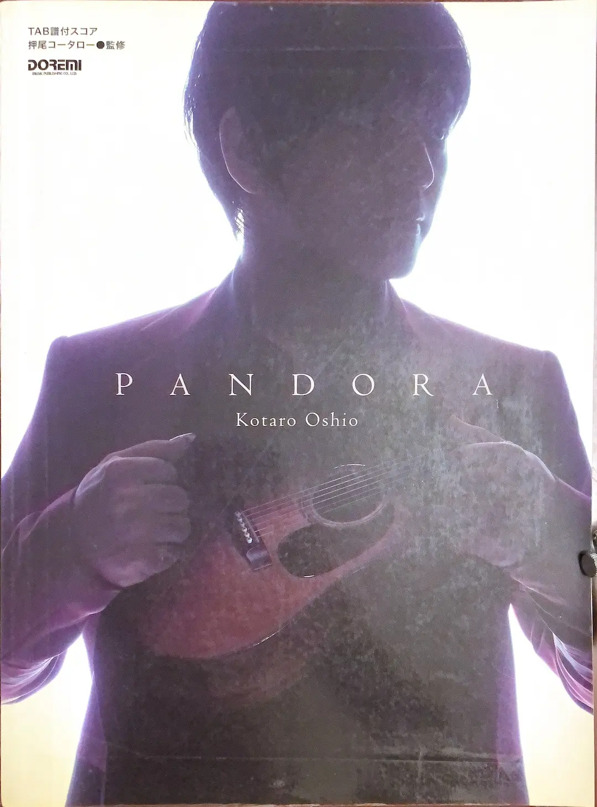

Practicing
 TBA TBA |
10th Anniversary BEST (by Kotaro Oshio)
Left: Tablature book 押尾コータロー／10th Anniversary BEST [Ballade Side]. |
|  |
PANDORA (by Kotaro Oshio)
Left: Tablature book 押尾コータロー／PANDORA. |
|
Drifting Clouds (by Masaaki Kishibe)
Left: Artwork of the album. |